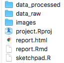

Download this file to use as a template for working on your project.
The zip file contains the following items:

There are three folders:
data_raw: This is where you should put all of your “raw” data used in your analysis. Put the files there, then NEVER touch them again. Opening the raw file in a program like Microsoft Excel can (and often will) corrupt your data file. If you feel you must open the data file in Excel to look at it, then create a copy of the raw data, put that copy somewhere else, open it, look at it, then DELETE IT. This will leave your “raw” data untouched and uncorrupted.
data_processed: Any and all modifications you make to your raw data should be done in R. If you want to save a processed data file, save it in this folder. This can be helpful if the data processing takes a long time to run. That way you only need to run the code to process the data once, and then you can just read in the pre-processed data from the data_processed folder to work on your analysis.
images: Sometimes you’ll want to include images in your report - put those here. I don’t mean a chart generated by code (those should be dynamically generated in code chunks), but an actual picture stored as a .png or .jpg, etc. To include that image in your report, you can write html code like this:
<center>
<img src="images/image_name.png" width=300>
</center>The code <center> and </center> just puts the image in the center of the page. The width=300 part defines the image width in pixels - use that to adjust the image size in your report.
There are four files:
project.Rproj: Open this whenever working on your project to make sure that you are in the correct working directory.
report.Rmd: Write your report in this file. Write code and text together, then compile it to a single html file that you can then share with others to communicate your analysis.
report.html: This is the compiled report. Once you’re done writing your .Rmd file, click the “knit” button in RStudio to create this file.
sketchpad.R: This is a .R file, not a .Rmd file - that means you can only write code in it. This is a good place to start when writing code to clean and explore your data and create some plots. Most of the time, coming up with the final format of your “cleaned” data and polished charts will involve many iterations. It is often easier to do that iterative work in a .R file to work on getting your code working correctly before going over to the report.Rmd file where you will want to only include the final format of your code. You don’t need to include this file at all for your report - that’s why it’s called “sketchpad”.